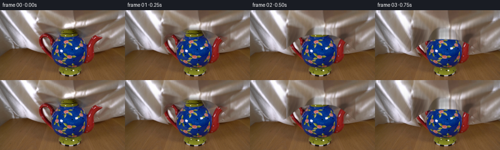
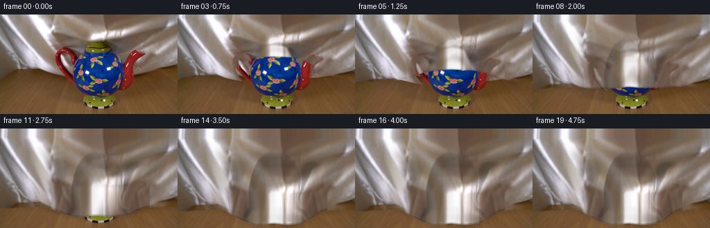
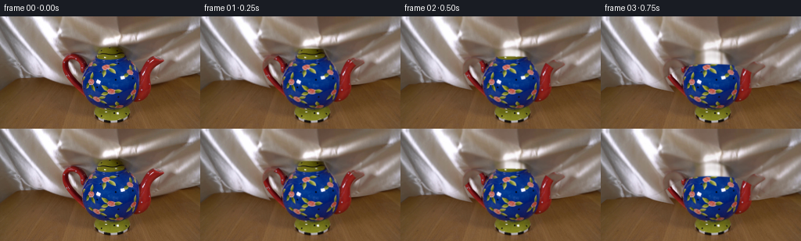
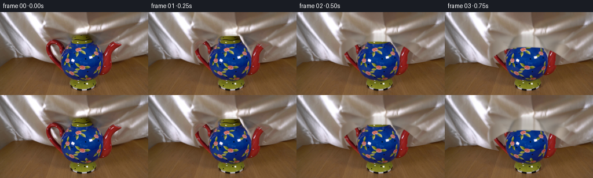
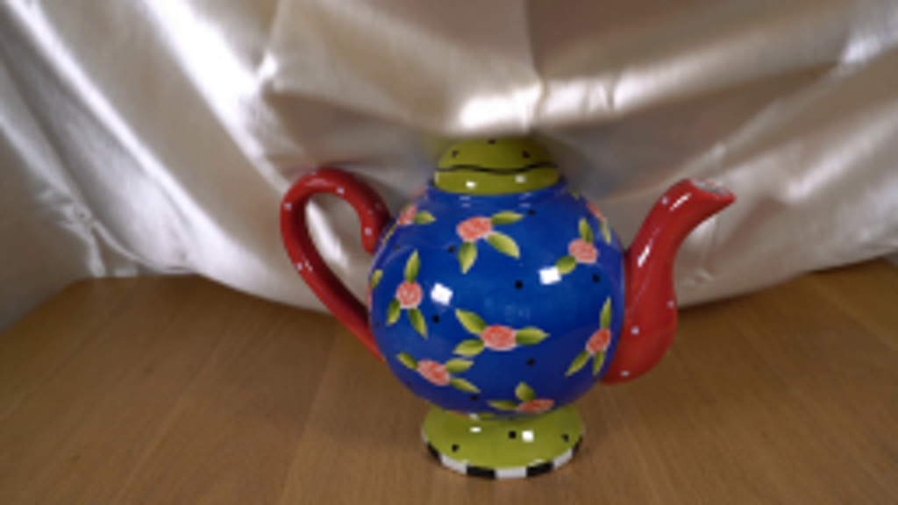
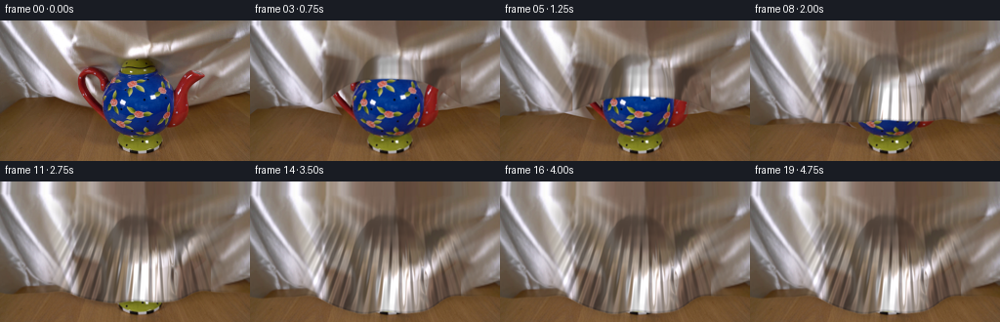
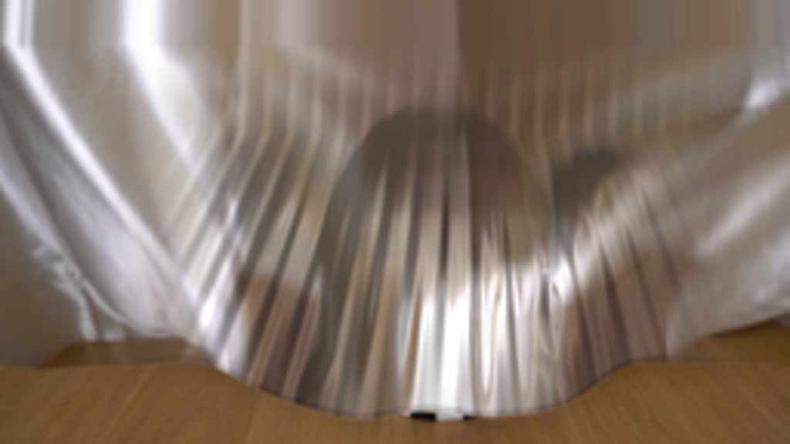
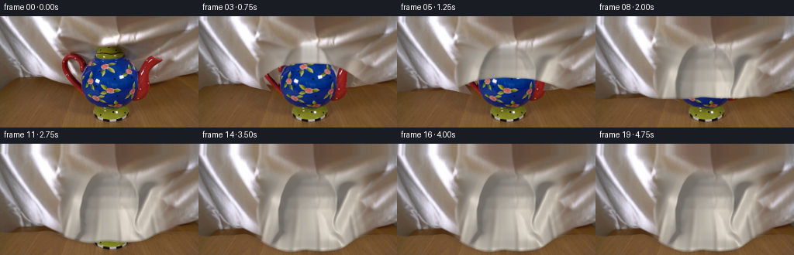

CODING AGENTS AS PIXEL WORLD MODELS
traex/GPT-6.1-Sol · 0158
点击播放 · 原生 RGB 像素
逐轮保存的候选
回放视频、检查图与代码变化。
每份候选均可单独播放。实际图片检查记录在下方工具轨迹中。
候选 01播放与检查图
点击播放 · 原生 RGB 像素


展开代码变化
--- 上一保存版本
+++ 本次保存版本
@@ -0,0 +1,134 @@
+from pathlib import Path
+import numpy as np
+from PIL import Image, ImageDraw, ImageFilter
+from scipy.ndimage import gaussian_filter, map_coordinates
+import cv2
+import artifact_io
+
+ROOT=Path(__file__).resolve().parent
+S=3
+W,H=256*S,144*S
+im=np.asarray(Image.open(ROOT/'first_frame.png').convert('RGB'))
+src=np.asarray(Image.fromarray(im).resize((W,H),Image.Resampling.BICUBIC)).astype(float)
+y,x=np.mgrid[:H,:W].astype(float)/S
+
+def poly_mask(points):
+ a=Image.new('L',(W,H),0)
+ ImageDraw.Draw(a).polygon([(round(a*S),round(b*S)) for a,b in points],fill=255)
+ return np.asarray(a)/255.
+# Only the ceramic is held stationary. The opening of the handle belongs to the backdrop.
+pot=poly_mask([(128,38),(139,37),(149,38),(157,41),(159,46),(163,53),(170,62),(174,70),(178,80),(181,68),(185,59),(190,53),(195,52),(209,55),(210,57),(203,61),(197,65),(192,75),(191,85),(188,96),(182,107),(174,112),(164,116),(165,118),(168,124),(166,131),(155,136),(139,138),(126,135),(120,130),(119,124),(123,117),(115,114),(104,107),(98,102),(88,89),(82,77),(79,67),(79,59),(82,52),(87,49),(93,47),(99,49),(104,54),(108,61),(113,58),(120,53),(120,47),(124,42)])
+hole=poly_mask([(88,58),(92,56),(97,59),(101,65),(102,72),(103,78),(103,89),(98,83),(92,77),(88,70),(87,64)])
+pot*=1-hole
+pot=gaussian_filter(pot,.35*S)
+# Bottom of the original silk, including its broad, naturally uneven hem.
+edgex=np.array([0,10,23,36,49,61,75,91,110,125,145,168,183,202,222,238,255])
+edgey=np.array([91,83,79,78,80,84,87,90,94,96,96,89,86,85,82,78,73])
+edge0=np.interp(x,edgex,edgey)
+cloth0=np.clip((edge0-y)*S+.5,0,1)*(1-pot)
+# Complete the unseen part of the sheet from material in the same photograph.
+# The texture source contains no ceramic or wood.
+sy=np.minimum(y,28+(y-28)*.08)
+sy=np.clip(sy,0,34)
+replacement=np.stack([map_coordinates(src[:,:,c],[sy*S,x*S],order=1,mode='nearest') for c in range(3)],axis=-1)
+valid=gaussian_filter(pot,1.5*S)
+fabric=src*(1-valid[...,None])+replacement*valid[...,None]
+# Stable lighting of the table; extending the background sheet never changes the camera.
+frames=[im.copy()]
+
+def sigmoid(v): return 1/(1+np.exp(-np.clip(v,-45,45)))
+
+# A smooth draping envelope: lid, main body, handle and angled spout.
+# Lengths are in projected image pixels, depth is in the same units.
+yprofile=np.array([29,35,39,45,55,69,85,102,114,125,135,143])
+rprofile=np.array([5,9,15,22,29,37,39,36,36,44,53,56])
+a_profile=np.array([0,2,8,19,30,37,38,32,25,15,0,0])
+r=np.interp(y,yprofile,rprofile)
+a=np.interp(y,yprofile,a_profile)
+u=(x-141.5)/r
+body=a*np.sqrt(np.maximum(0,1-u*u))
+body=gaussian_filter(body,1.3*S)
+# The silk bridges the handle opening rather than reproducing the hole.
+handle=19*np.exp(-((x-94)/18)**2-((y-69)/21)**2)
+spout_axis=195-.43*(y-57)
+spout=20*np.exp(-((x-spout_axis)/10)**2)*sigmoid((y-53)/2)*sigmoid((111-y)/7)
+base_z=np.maximum(body,np.maximum(handle,spout))
+base_z=gaussian_filter(base_z,1.1*S)
+
+for i in range(1,20):
+ t=i/4
+ # Slow, continuous lowering followed by the small last motion of the silk settling.
+ p=np.clip(t/3.35,0,1)
+ q=1-(1-p)**1.30
+ settle=max(t-3.35,0)
+ lift=31*q
+ # Broad rear part of the silk descends and its existing diagonal folds move with it.
+ yy=(y-lift*.43)/(1+.23*q)
+ xx=x+1.6*q*np.sin(y/31+x/75)
+ rear=np.stack([map_coordinates(fabric[:,:,c],[np.clip(yy*S,0,H-1),np.clip(xx*S,0,W-1)],order=1,mode='nearest') for c in range(3)],-1)
+ rear_edge=edge0+q*(18+7*np.exp(-((x-143)/80)**2))
+ rear_alpha=np.clip((rear_edge-y)*S+.5,0,1)
+ img=src*(1-rear_alpha[...,None])+rear*rear_alpha[...,None]
+ # Place the stationary pot on top of the rear hanging material.
+ img=img*(1-pot[...,None])+src*pot[...,None]
+
+ # The leading fold advances down the FRONT of the pot, first touching its lid.
+ center_edge=31+104*q
+ # The sides are already lower, making a concave, curved leading edge early on.
+ outer_edge=79+39*q
+ blend=np.exp(-((x-142)/61)**4)
+ front_edge=outer_edge*(1-blend)+center_edge*blend
+ front_edge+=q*(1.3*np.sin(x/13)+.65*np.sin(x/5.8))
+ # Right side is raised slightly by the spout's pointed support.
+ front_edge-=6*q*np.exp(-((x-198)/15)**2)
+ # During the first frames foreground and background join where the edge has
+ # not yet reached a part of the teapot.
+ weight=np.clip((y-24)/16,0,1)
+ progress=sigmoid((front_edge-y)*S*1.1)
+ # Fabric normal field with a few long tension folds, not random wrinkles.
+ z=base_z.copy()
+ phase=(x-141.5)/(8.0+.058*np.maximum(0,y-43))
+ skirt=sigmoid((y-67)/8)*sigmoid((139-y)/3)
+ fold_env=(.5+2.0*skirt)*np.exp(-((x-143)/77)**6)
+ folds=(np.sin(phase*2*np.pi+.06*y)+.32*np.sin(phase*4*np.pi+.045*y))*fold_env
+ # Wrinkles relax over a fraction of a second after reaching the table.
+ folds*=.90+.10*np.exp(-settle*2)*np.cos(settle*8)
+ z+=folds*q
+ # Diagonal suspended folds from the handle and the spout towards the hem.
+ z+=2*q*np.exp(-((x-(91-.37*(y-69)))/3.0)**2)*sigmoid((y-66)/4)
+ z+=2.4*q*np.exp(-((x-(196+.24*(y-59)))/3.6)**2)*sigmoid((y-59)/4)
+ zx=gaussian_filter(np.gradient(z,axis=1)*S,.6*S)
+ zy=gaussian_filter(np.gradient(z,axis=0)*S,.6*S)
+ # Soft directional illumination, with the elongated glossy highlights of satin.
+ norm=np.sqrt(1+zx*zx+zy*zy)
+ diffuse=np.clip((-.53*zx-.40*zy+.74)/norm,0,1)
+ spec=np.maximum(0,(-.42*zx-.27*zy+.86)/norm)**13
+ shade=.64+.37*diffuse+.15*spec
+ # Drape the upper silk texture onto the protruding surface. Broad satin bands
+ # remain coherent as they elongate vertically around the object.
+ texx=x+q*(.19*zx*z+2*np.sin(y/25))
+ texy=y*(1-.55*q)-q*13 - .10*q*z
+ texy=np.where((x>74)&(x<216),np.minimum(texy,31+np.maximum(0,texy-31)*.07*q),texy)
+ texy=np.clip(texy,0,74)
+ mat=np.stack([map_coordinates(fabric[:,:,c],[texy*S,np.clip(texx*S,0,W-1)],order=1,mode='nearest') for c in range(3)],-1)
+ # Keep the original metallic silk appearance rather than a uniform synthetic color.
+ mat=mat*shade[...,None]
+ # Around the silhouette silk is drawn into narrow shadowed pleats.
+ hem_dist=front_edge-y
+ hem_dark=1-.18*np.exp(-((hem_dist-1.0)/1.05)**2)*q
+ mat*=hem_dark[...,None]
+ # Front material is the same rear sheet, becoming three dimensional as it
+ # crosses the lid. Blend it into unperturbed folds away from the object.
+ support=np.exp(-((x-141)/89)**6)*sigmoid((y-26)/5)
+ front=rear*(1-support[...,None])+mat*support[...,None]
+ alpha=progress*np.clip(t/.30,0,1)
+ # Only the part below the initial contact becomes a new foreground surface.
+ # The entire upper piece moves smoothly with the descending cloth.
+ img=img*(1-alpha[...,None])+front*alpha[...,None]
+ # Shallow contact shadow on the wood immediately beyond the silk hem.
+ shadow=.16*q*np.exp(-np.maximum(0,y-front_edge)/3.3)*sigmoid((y-front_edge-.8)*2)*np.exp(-((x-144)/114)**8)
+ img*=1-shadow[...,None]
+ out=Image.fromarray(np.clip(img,0,255).astype('uint8')).resize((256,144),Image.Resampling.LANCZOS)
+ frames.append(np.asarray(out))
+frames=np.stack(frames).astype(np.uint8)
+artifact_io.save(frames,ROOT)
候选 02播放与检查图
点击播放 · 原生 RGB 像素

展开代码变化
--- 上一保存版本
+++ 本次保存版本
@@ -73,53 +73,58 @@
img=img*(1-pot[...,None])+src*pot[...,None]
# The leading fold advances down the FRONT of the pot, first touching its lid.
- center_edge=31+104*q
+ center_edge=31+108*q
# The sides are already lower, making a concave, curved leading edge early on.
outer_edge=79+39*q
blend=np.exp(-((x-142)/61)**4)
front_edge=outer_edge*(1-blend)+center_edge*blend
front_edge+=q*(1.3*np.sin(x/13)+.65*np.sin(x/5.8))
# Right side is raised slightly by the spout's pointed support.
- front_edge-=6*q*np.exp(-((x-198)/15)**2)
+ front_edge-=3*q*np.exp(-((x-198)/15)**2)
# During the first frames foreground and background join where the edge has
# not yet reached a part of the teapot.
weight=np.clip((y-24)/16,0,1)
progress=sigmoid((front_edge-y)*S*1.1)
# Fabric normal field with a few long tension folds, not random wrinkles.
- z=base_z.copy()
- phase=(x-141.5)/(8.0+.058*np.maximum(0,y-43))
- skirt=sigmoid((y-67)/8)*sigmoid((139-y)/3)
- fold_env=(.5+2.0*skirt)*np.exp(-((x-143)/77)**6)
- folds=(np.sin(phase*2*np.pi+.06*y)+.32*np.sin(phase*4*np.pi+.045*y))*fold_env
- # Wrinkles relax over a fraction of a second after reaching the table.
- folds*=.90+.10*np.exp(-settle*2)*np.cos(settle*8)
+ z=base_z.copy()*q
+ # Long, irregular pleats broaden below the teapot, where the silk is slack.
+ skirt=sigmoid((y-91)/9)*sigmoid((143-y)/3)
+ folds=np.zeros_like(x)
+ for pos, slope, amp, width in [(95,-.30,2.3,3.2),(112,-.19,1.8,4.4),
+ (128,-.11,1.7,4.1),(153,.06,1.9,4.0),
+ (172,.20,2.5,4.4),(194,.23,2.1,3.1),
+ (210,.30,1.8,4.2)]:
+ line=pos+slope*(y-77)+1.3*np.sin(y/21+pos)
+ folds+=amp*np.exp(-((x-line)/width)**2)
+ folds*=(.14+.86*skirt)*sigmoid((y-48)/7)
+ folds*=.95+.05*np.exp(-settle*2)*np.cos(settle*8)
z+=folds*q
- # Diagonal suspended folds from the handle and the spout towards the hem.
- z+=2*q*np.exp(-((x-(91-.37*(y-69)))/3.0)**2)*sigmoid((y-66)/4)
- z+=2.4*q*np.exp(-((x-(196+.24*(y-59)))/3.6)**2)*sigmoid((y-59)/4)
+ z+=1.0*q*np.exp(-((x-(91-.37*(y-69)))/5)**2)*sigmoid((y-66)/4)
+ z+=1.4*q*np.exp(-((x-(196+.24*(y-59)))/5)**2)*sigmoid((y-59)/4)
zx=gaussian_filter(np.gradient(z,axis=1)*S,.6*S)
zy=gaussian_filter(np.gradient(z,axis=0)*S,.6*S)
# Soft directional illumination, with the elongated glossy highlights of satin.
norm=np.sqrt(1+zx*zx+zy*zy)
diffuse=np.clip((-.53*zx-.40*zy+.74)/norm,0,1)
spec=np.maximum(0,(-.42*zx-.27*zy+.86)/norm)**13
- shade=.64+.37*diffuse+.15*spec
+ shade=.73+.26*diffuse+.14*spec
# Drape the upper silk texture onto the protruding surface. Broad satin bands
# remain coherent as they elongate vertically around the object.
- texx=x+q*(.19*zx*z+2*np.sin(y/25))
- texy=y*(1-.55*q)-q*13 - .10*q*z
- texy=np.where((x>74)&(x<216),np.minimum(texy,31+np.maximum(0,texy-31)*.07*q),texy)
+ texx=x+q*(.05*zx*z+1.0*np.sin(y/25))
+ texy=y*(1-.46*q)-q*18 - .08*q*z
+ texy=np.where((x>74)&(x<216),np.minimum(texy,31+np.maximum(0,texy-31)*(1-.95*q)),texy)
texy=np.clip(texy,0,74)
mat=np.stack([map_coordinates(fabric[:,:,c],[texy*S,np.clip(texx*S,0,W-1)],order=1,mode='nearest') for c in range(3)],-1)
# Keep the original metallic silk appearance rather than a uniform synthetic color.
- mat=mat*shade[...,None]
+ mat=(mat*.82+gaussian_filter(mat,(2*S,2*S,0))*.18)*shade[...,None]
+ mat=rear*(1-q)+mat*q
# Around the silhouette silk is drawn into narrow shadowed pleats.
hem_dist=front_edge-y
hem_dark=1-.18*np.exp(-((hem_dist-1.0)/1.05)**2)*q
mat*=hem_dark[...,None]
# Front material is the same rear sheet, becoming three dimensional as it
# crosses the lid. Blend it into unperturbed folds away from the object.
- support=np.exp(-((x-141)/89)**6)*sigmoid((y-26)/5)
+ support=np.exp(-((x-141)/89)**6)*sigmoid((y-34)/5)
front=rear*(1-support[...,None])+mat*support[...,None]
alpha=progress*np.clip(t/.30,0,1)
# Only the part below the initial contact becomes a new foreground surface.
候选 03播放与检查图
点击播放 · 原生 RGB 像素

展开代码变化
代码未变化；重新保存了产物。
候选 04播放与检查图
点击播放 · 原生 RGB 像素


展开代码变化
--- 上一保存版本
+++ 本次保存版本
@@ -1,7 +1,7 @@
from pathlib import Path
import numpy as np
from PIL import Image, ImageDraw, ImageFilter
-from scipy.ndimage import gaussian_filter, map_coordinates
+from scipy.ndimage import gaussian_filter, map_coordinates, binary_dilation, binary_fill_holes
import cv2
import artifact_io
@@ -31,7 +31,7 @@
sy=np.minimum(y,28+(y-28)*.08)
sy=np.clip(sy,0,34)
replacement=np.stack([map_coordinates(src[:,:,c],[sy*S,x*S],order=1,mode='nearest') for c in range(3)],axis=-1)
-valid=gaussian_filter(pot,1.5*S)
+valid=gaussian_filter(binary_dilation(binary_fill_holes(pot>.4),iterations=5*S).astype(float),1.0*S)
fabric=src*(1-valid[...,None])+replacement*valid[...,None]
# Stable lighting of the table; extending the background sheet never changes the camera.
frames=[im.copy()]
@@ -107,7 +107,7 @@
norm=np.sqrt(1+zx*zx+zy*zy)
diffuse=np.clip((-.53*zx-.40*zy+.74)/norm,0,1)
spec=np.maximum(0,(-.42*zx-.27*zy+.86)/norm)**13
- shade=.73+.26*diffuse+.14*spec
+ shade=.60+.42*diffuse+.16*spec
# Drape the upper silk texture onto the protruding surface. Broad satin bands
# remain coherent as they elongate vertically around the object.
texx=x+q*(.05*zx*z+1.0*np.sin(y/25))
@@ -116,7 +116,7 @@
texy=np.clip(texy,0,74)
mat=np.stack([map_coordinates(fabric[:,:,c],[texy*S,np.clip(texx*S,0,W-1)],order=1,mode='nearest') for c in range(3)],-1)
# Keep the original metallic silk appearance rather than a uniform synthetic color.
- mat=(mat*.82+gaussian_filter(mat,(2*S,2*S,0))*.18)*shade[...,None]
+ mat=(mat*.60+gaussian_filter(mat,(5*S,4*S,0))*.40)*shade[...,None]
mat=rear*(1-q)+mat*q
# Around the silhouette silk is drawn into narrow shadowed pleats.
hem_dist=front_edge-y
候选 05播放与检查图
候选 06播放与检查图
点击播放 · 原生 RGB 像素

展开代码变化
--- 上一保存版本
+++ 本次保存版本
@@ -108,16 +108,22 @@
diffuse=np.clip((-.53*zx-.40*zy+.74)/norm,0,1)
spec=np.maximum(0,(-.42*zx-.27*zy+.86)/norm)**13
shade=.60+.42*diffuse+.16*spec
- # Drape the upper silk texture onto the protruding surface. Broad satin bands
- # remain coherent as they elongate vertically around the object.
- texx=x+q*(.05*zx*z+1.0*np.sin(y/25))
- texy=y*(1-.46*q)-q*18 - .08*q*z
- texy=np.where((x>74)&(x<216),np.minimum(texy,31+np.maximum(0,texy-31)*(1-.95*q)),texy)
- texy=np.clip(texy,0,74)
- mat=np.stack([map_coordinates(fabric[:,:,c],[texy*S,np.clip(texx*S,0,W-1)],order=1,mode='nearest') for c in range(3)],-1)
- # Keep the original metallic silk appearance rather than a uniform synthetic color.
- mat=(mat*.60+gaussian_filter(mat,(5*S,4*S,0))*.40)*shade[...,None]
- mat=rear*(1-q)+mat*q
+ # Satin body keeps the same warm white silk hue, with its broad sheen
+ # determined by the surface normals rather than printed backdrop folds.
+ texx=x+q*(.03*zx*z+1.0*np.sin(y/25))
+ texy=y*(1-.40*q)-q*15-.08*q*z
+ texy=np.clip(texy,0,79)
+ texture=np.stack([map_coordinates(fabric[:,:,c],[texy*S,np.clip(texx*S,0,W-1)],order=1,mode='nearest') for c in range(3)],-1)
+ # Only fine photographic irregularities travel into the highly curved portion.
+ detail=texture-gaussian_filter(texture,(4*S,4*S,0))
+ tint=np.array([190.,183.,172.])
+ satin=tint[None,None,:]*shade[...,None]+detail*.18
+ edge_transition=np.maximum(sigmoid((79-x)/4),sigmoid((x-214)/5))
+ above=sigmoid((36-y)/4)
+ blendback=np.maximum(edge_transition,above)
+ mat=satin*(1-blendback[...,None])+rear*blendback[...,None]
+ contact=np.clip(t/1.0,0,1)
+ mat=rear*(1-contact)+mat*contact
# Around the silhouette silk is drawn into narrow shadowed pleats.
hem_dist=front_edge-y
hem_dark=1-.18*np.exp(-((hem_dist-1.0)/1.05)**2)*q
候选 07播放与检查图
点击播放 · 原生 RGB 像素


展开代码变化
--- 上一保存版本
+++ 本次保存版本
@@ -53,7 +53,7 @@
spout_axis=195-.43*(y-57)
spout=20*np.exp(-((x-spout_axis)/10)**2)*sigmoid((y-53)/2)*sigmoid((111-y)/7)
base_z=np.maximum(body,np.maximum(handle,spout))
-base_z=gaussian_filter(base_z,1.1*S)
+base_z=gaussian_filter(base_z,2.2*S)
for i in range(1,20):
t=i/4
@@ -107,7 +107,7 @@
norm=np.sqrt(1+zx*zx+zy*zy)
diffuse=np.clip((-.53*zx-.40*zy+.74)/norm,0,1)
spec=np.maximum(0,(-.42*zx-.27*zy+.86)/norm)**13
- shade=.60+.42*diffuse+.16*spec
+ shade=.65+.34*diffuse+.21*spec
# Satin body keeps the same warm white silk hue, with its broad sheen
# determined by the surface normals rather than printed backdrop folds.
texx=x+q*(.03*zx*z+1.0*np.sin(y/25))
@@ -117,7 +117,7 @@
# Only fine photographic irregularities travel into the highly curved portion.
detail=texture-gaussian_filter(texture,(4*S,4*S,0))
tint=np.array([190.,183.,172.])
- satin=tint[None,None,:]*shade[...,None]+detail*.18
+ satin=(tint[None,None,:]*.72+gaussian_filter(texture,(2*S,1.3*S,0))*.28)*shade[...,None]+detail*.16
edge_transition=np.maximum(sigmoid((79-x)/4),sigmoid((x-214)/5))
above=sigmoid((36-y)/4)
blendback=np.maximum(edge_transition,above)
候选 08播放与检查图
可观测工具轨迹
实际执行的命令与返回图片。
命令 1exit 0
/bin/bash -lc 'ls -la && cat prompt.txt && cat GENERATION_RULES.md'
命令 2exit 0
/bin/bash -lc "cat artifact_io.py && python - <<'PY'
from PIL import Image
im=Image.open('first_frame.png'); print(im.size); im.resize((1024,576)).save('.tmp/first_large.png')
PY"命令 3exit 0
/bin/bash -lc "python - <<'PY' import importlib.util for m in ['numpy','scipy','cv2','PIL']: print(m,importlib.util.find_spec(m) is not None) PY"
命令 4exit 0
/bin/bash -lc "cat > generate.py <<'PY'
from pathlib import Path
import numpy as np
from PIL import Image, ImageDraw, ImageFilter
from scipy.ndimage import gaussian_filter, map_coordinates
import cv2
import artifact_io
ROOT=Path(__file__).resolve().parent
S=3
W,H=256*S,144*S
im=np.asarray(Image.open(ROOT/'first_frame.png').convert('RGB'))
src=np.asarray(Image.fromarray(im).resize((W,H),Image.Resampling.BICUBIC)).astype(float)
y,x=np.mgrid[:H,:W].astype(float)/S
def poly_mask(points):
a=Image.new('L',(W,H),0)
ImageDraw.Draw(a).polygon([(round(a*S),round(b*S)) for a,b in points],fill=255)
return np.asarray(a)/255.
# Only the ceramic is held stationary. The opening of the handle belongs to the backdrop.
pot=poly_mask([(128,38),(139,37),(149,38),(157,41),(159,46),(163,53),(170,62),(174,70),(178,80),(181,68),(185,59),(190,53),(195,52),(209,55),(210,57),(203,61),(197,65),(192,75),(191,85),(188,96),(182,107),(174,112),(164,116),(165,118),(168,124),(166,131),(155,136),(139,138),(126,135),(120,130),(119,124),(123,117),(115,114),(104,107),(98,102),(88,89),(82,77),(79,67),(79,59),(82,52),(87,49),(93,47),(99,49),(104,54),(108,61),(113,58),(120,53),(120,47),(124,42)])
hole=poly_mask([(88,58),(92,56),(97,59),(101,65),(102,72),(103,78),(103,89),(98,83),(92,77),(88,70),(87,64)])
pot*=1-hole
pot=gaussian_filter(pot,.35*S)
# Bottom of the original silk, including its broad, naturally uneven hem.
edgex=np.array([0,10,23,36,49,61,75,91,110,125,145,168,183,202,222,238,255])
edgey=np.array([91,83,79,78,80,84,87,90,94,96,96,89,86,85,82,78,73])
edge0=np.interp(x,edgex,edgey)
cloth0=np.clip((edge0-y)*S+.5,0,1)*(1-pot)
# Complete the unseen part of the sheet from material in the same photograph.
# The texture source contains no ceramic or wood.
sy=np.minimum(y,28+(y-28)*.08)
sy=np.clip(sy,0,34)
replacement=np.stack([map_coordinates(src[:,:,c],[sy*S,x*S],order=1,mode='nearest') for c in range(3)],axis=-1)
valid=gaussian_filter(pot,1.5*S)
fabric=src*(1-valid[...,None])+replacement*valid[...,None]
# Stable lighting of the table; extending the background sheet never changes the camera.
frames=[im.copy()]
def sigmoid(v): return 1/(1+np.exp(-np.clip(v,-45,45)))
# A smooth draping envelope: lid, main body, handle and angled spout.
# Lengths are in projected image pixels, depth is in the same units.
yprofile=np.array([29,35,39,45,55,69,85,102,114,125,135,143])
rprofile=np.array([5,9,15,22,29,37,39,36,36,44,53,56])
a_profile=np.array([0,2,8,19,30,37,38,32,25,15,0,0])
r=np.interp(y,yprofile,rprofile)
a=np.interp(y,yprofile,a_profile)
u=(x-141.5)/r
body=a*np.sqrt(np.maximum(0,1-u*u))
body=gaussian_filter(body,1.3*S)
# The silk bridges the handle opening rather than reproducing the hole.
handle=19*np.exp(-((x-94)/18)**2-((y-69)/21)**2)
spout_axis=195-.43*(y-57)
spout=20*np.exp(-((x-spout_axis)/10)**2)*sigmoid((y-53)/2)*sigmoid((111-y)/7)
base_z=np.maximum(body,np.maximum(handle,spout))
base_z=gaussian_filter(base_z,1.1*S)
for i in range(1,20):
t=i/4
# Slow, continuous lowering followed by the small last motion of the silk settling.
p=np.clip(t/3.35,0,1)
q=1-(1-p)**1.30
settle=max(t-3.35,0)
lift=31*q
# Broad rear part of the silk descends and its existing diagonal folds move with it.
yy=(y-lift*.43)/(1+.23*q)
xx=x+1.6*q*np.sin(y/31+x/75)
rear=np.stack([map_coordinates(fabric[:,:,c],[np.clip(yy*S,0,H-1),np.clip(xx*S,0,W-1)],order=1,mode='nearest') for c in range(3)],-1)
rear_edge=edge0+q*(18+7*np.exp(-((x-143)/80)**2))
rear_alpha=np.clip((rear_edge-y)*S+.5,0,1)
img=src*(1-rear_alpha[...,None])+rear*rear_alpha[...,None]
# Place the stationary pot on top of the rear hanging material.
img=img*(1-pot[...,None])+src*pot[...,None]
# The leading fold advances down the FRONT of the pot, first touching its lid.
center_edge=31+104*q
# The sides are already lower, making a concave, curved leading edge early on.
outer_edge=79+39*q
blend=np.exp(-((x-142)/61)**4)
front_edge=outer_edge*(1-blend)+center_edge*blend
front_edge+=q*(1.3*np.sin(x/13)+.65*np.sin(x/5.8))
# Right side is raised slightly by the spout's pointed support.
front_edge-=6*q*np.exp(-((x-198)/15)**2)
# During the first frames foreground and background join where the edge has
# not yet reached a part of the teapot.
weight=np.clip((y-24)/16,0,1)
progress=sigmoid((front_edge-y)*S*1.1)
# Fabric normal field with a few long tension folds, not random wrinkles.
z=base_z.copy()
phase=(x-141.5)/(8.0+.058*np.maximum(0,y-43))
skirt=sigmoid((y-67)/8)*sigmoid((139-y)/3)
fold_env=(.5+2.0*skirt)*np.exp(-((x-143)/77)**6)
folds=(np.sin(phase*2*np.pi+.06*y)+.32*np.sin(phase*4*np.pi+.045*y))*fold_env
# Wrinkles relax over a fraction of a second after reaching the table.
folds*=.90+.10*np.exp(-settle*2)*np.cos(settle*8)
z+=folds*q
# Diagonal suspended folds from the handle and the spout towards the hem.
z+=2*q*np.exp(-((x-(91-.37*(y-69)))/3.0)**2)*sigmoid((y-66)/4)
z+=2.4*q*np.exp(-((x-(196+.24*(y-59)))/3.6)**2)*sigmoid((y-59)/4)
zx=gaussian_filter(np.gradient(z,axis=1)*S,.6*S)
zy=gaussian_filter(np.gradient(z,axis=0)*S,.6*S)
# Soft directional illumination, with the elongated glossy highlights of satin.
norm=np.sqrt(1+zx*zx+zy*zy)
diffuse=np.clip((-.53*zx-.40*zy+.74)/norm,0,1)
spec=np.maximum(0,(-.42*zx-.27*zy+.86)/norm)**13
shade=.64+.37*diffuse+.15*spec
# Drape the upper silk texture onto the protruding surface. Broad satin bands
# remain coherent as they elongate vertically around the object.
texx=x+q*(.19*zx*z+2*np.sin(y/25))
texy=y*(1-.55*q)-q*13 - .10*q*z
texy=np.where((x>74)&(x<216),np.minimum(texy,31+np.maximum(0,texy-31)*.07*q),texy)
texy=np.clip(texy,0,74)
mat=np.stack([map_coordinates(fabric[:,:,c],[texy*S,np.clip(texx*S,0,W-1)],order=1,mode='nearest') for c in range(3)],-1)
# Keep the original metallic silk appearance rather than a uniform synthetic color.
mat=mat*shade[...,None]
# Around the silhouette silk is drawn into narrow shadowed pleats.
hem_dist=front_edge-y
hem_dark=1-.18*np.exp(-((hem_dist-1.0)/1.05)**2)*q
mat*=hem_dark[...,None]
# Front material is the same rear sheet, becoming three dimensional as it
# crosses the lid. Blend it into unperturbed folds away from the object.
support=np.exp(-((x-141)/89)**6)*sigmoid((y-26)/5)
front=rear*(1-support[...,None])+mat*support[...,None]
alpha=progress*np.clip(t/.30,0,1)
# Only the part below the initial contact becomes a new foreground surface.
# The entire upper piece moves smoothly with the descending cloth.
img=img*(1-alpha[...,None])+front*alpha[...,None]
# Shallow contact shadow on the wood immediately beyond the silk hem.
shadow=.16*q*np.exp(-np.maximum(0,y-front_edge)/3.3)*sigmoid((y-front_edge-.8)*2)*np.exp(-((x-144)/114)**8)
img*=1-shadow[...,None]
out=Image.fromarray(np.clip(img,0,255).astype('uint8')).resize((256,144),Image.Resampling.LANCZOS)
frames.append(np.asarray(out))
frames=np.stack(frames).astype(np.uint8)
artifact_io.save(frames,ROOT)
PY
python generate.py"命令 5exit 0
/bin/bash -lc "python - <<'PY'
from PIL import Image
Image.open('frames/19.png').resize((1024,576)).save('.tmp/final_large.png')
PY"命令 6exit 0
/bin/bash -lc "cp generate.py .tmp/generate_v1.py
python - <<'PY'
p='generate.py'
s=open(p).read().replace('center_edge=31+104*q','center_edge=31+108*q')
s=s.replace('front_edge-=6*q','front_edge-=3*q')
a=s.index(' phase=(x-141.5)')
b=s.index(' zx=gaussian_filter',a)
s=s[:a]+''' # Long, irregular pleats broaden below the teapot, where the silk is slack.
skirt=sigmoid((y-91)/9)*sigmoid((143-y)/3)
folds=np.zeros_like(x)
for pos, slope, amp, width in [(95,-.30,2.3,3.2),(112,-.19,1.8,4.4),
(128,-.11,1.7,4.1),(153,.06,1.9,4.0),
(172,.20,2.5,4.4),(194,.23,2.1,3.1),
(210,.30,1.8,4.2)]:
line=pos+slope*(y-77)+1.3*np.sin(y/21+pos)
folds+=amp*np.exp(-((x-line)/width)**2)
folds*=(.14+.86*skirt)*sigmoid((y-48)/7)
folds*=.95+.05*np.exp(-settle*2)*np.cos(settle*8)
z+=folds*q
z+=1.0*q*np.exp(-((x-(91-.37*(y-69)))/5)**2)*sigmoid((y-66)/4)
z+=1.4*q*np.exp(-((x-(196+.24*(y-59)))/5)**2)*sigmoid((y-59)/4)
''' +s[b:]
s=s.replace('z=base_z.copy()','z=base_z.copy()*q')
s=s.replace('shade=.64+.37*diffuse+.15*spec','shade=.73+.26*diffuse+.14*spec')
s=s.replace('texx=x+q*(.19*zx*z+2*np.sin(y/25))','texx=x+q*(.05*zx*z+1.0*np.sin(y/25))')
s=s.replace('texy=y*(1-.55*q)-q*13 - .10*q*z','texy=y*(1-.46*q)-q*18 - .08*q*z')
s=s.replace('np.minimum(texy,31+np.maximum(0,texy-31)*.07*q)','np.minimum(texy,31+np.maximum(0,texy-31)*(1-.95*q))')
s=s.replace(' mat=mat*shade[...,None]',' mat=(mat*.82+gaussian_filter(mat,(2*S,2*S,0))*.18)*shade[...,None]\\n mat=rear*(1-q)+mat*q')
s=s.replace('sigmoid((y-26)/5)','sigmoid((y-34)/5)')
open(p,'w').write(s)
PY
python generate.py"命令 7exit 0
/bin/bash -lc "cp generate.py .tmp/generate_v2.py
python - <<'PY'
p='generate.py';s=open(p).read();s=s.replace('from scipy.ndimage import gaussian_filter, map_coordinates','from scipy.ndimage import gaussian_filter, map_coordinates, binary_dilation, binary_fill_holes')
s=s.replace('valid=gaussian_filter(pot,1.5*S)','valid=gaussian_filter(binary_dilation(binary_fill_holes(pot>.4),iterations=5*S).astype(float),1.0*S)')
s=s.replace('shade=.73+.26*diffuse+.14*spec','shade=.60+.42*diffuse+.16*spec')
s=s.replace('mat=(mat*.82+gaussian_filter(mat,(2*S,2*S,0))*.18)*shade[...,None]','mat=(mat*.60+gaussian_filter(mat,(5*S,4*S,0))*.40)*shade[...,None]')
open(p,'w').write(s)
PY
python generate.py"命令 8exit 0
/bin/bash -lc "cp generate.py .tmp/generate_v3.py
python - <<'PY'
p='generate.py';s=open(p).read();a=s.index(' # Drape the upper silk texture');b=s.index(' # Around the silhouette',a)
s=s[:a]+''' # Satin body keeps the same warm white silk hue, with its broad sheen
# determined by the surface normals rather than printed backdrop folds.
texx=x+q*(.03*zx*z+1.0*np.sin(y/25))
texy=y*(1-.40*q)-q*15-.08*q*z
texy=np.clip(texy,0,79)
texture=np.stack([map_coordinates(fabric[:,:,c],[texy*S,np.clip(texx*S,0,W-1)],order=1,mode='nearest') for c in range(3)],-1)
# Only fine photographic irregularities travel into the highly curved portion.
detail=texture-gaussian_filter(texture,(4*S,4*S,0))
tint=np.array([190.,183.,172.])
satin=tint[None,None,:]*shade[...,None]+detail*.18
edge_transition=np.maximum(sigmoid((79-x)/4),sigmoid((x-214)/5))
above=sigmoid((36-y)/4)
blendback=np.maximum(edge_transition,above)
mat=satin*(1-blendback[...,None])+rear*blendback[...,None]
contact=np.clip(t/1.0,0,1)
mat=rear*(1-contact)+mat*contact
''' +s[b:]
open(p,'w').write(s)
PY
python generate.py"命令 9exit 0
/bin/bash -lc "python - <<'PY'
p='generate.py';s=open(p).read().replace('base_z=gaussian_filter(base_z,1.1*S)','base_z=gaussian_filter(base_z,2.2*S)')
s=s.replace('satin=tint[None,None,:]*shade[...,None]+detail*.18','satin=(tint[None,None,:]*.72+gaussian_filter(texture,(2*S,1.3*S,0))*.28)*shade[...,None]+detail*.16')
s=s.replace('shade=.60+.42*diffuse+.16*spec','shade=.65+.34*diffuse+.21*spec')
open(p,'w').write(s)
PY
python generate.py"命令 10exit 0
/bin/bash -lc "python - <<'PY'
import numpy as np
from PIL import Image
z=np.load('pixels.npz')['pixels']
a=np.array(Image.open('first_frame.png').convert('RGB'))
b=np.stack([(z[:,:,0]>>16)&255,(z[:,:,0]>>8)&255,z[:,:,0]&255],-1).astype('uint8')
assert np.array_equal(a,b)
assert z.shape==(144,256,20)
print('Verified: 20 RGB frames, 256Ã144; frame 00 exactly matches input.')
PY"视觉工具实际返回图片 1

视觉工具实际返回图片 2

视觉工具实际返回图片 3

视觉工具实际返回图片 4

视觉工具实际返回图片 5

视觉工具实际返回图片 6

保存候选 8 份；完成命令 10 次；可验证图片返回 6 张。原始 API 响应与完整日志保留在本地。